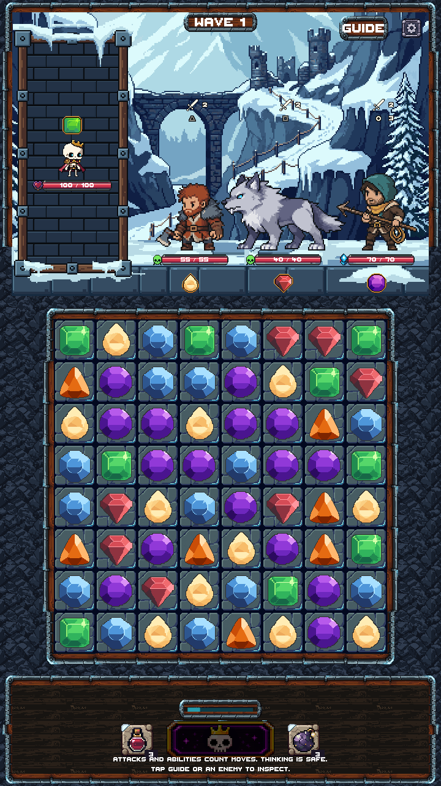
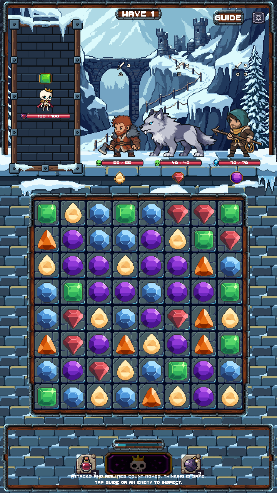
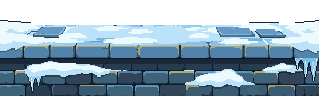
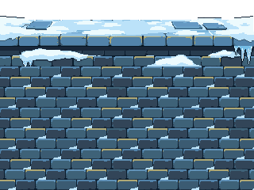
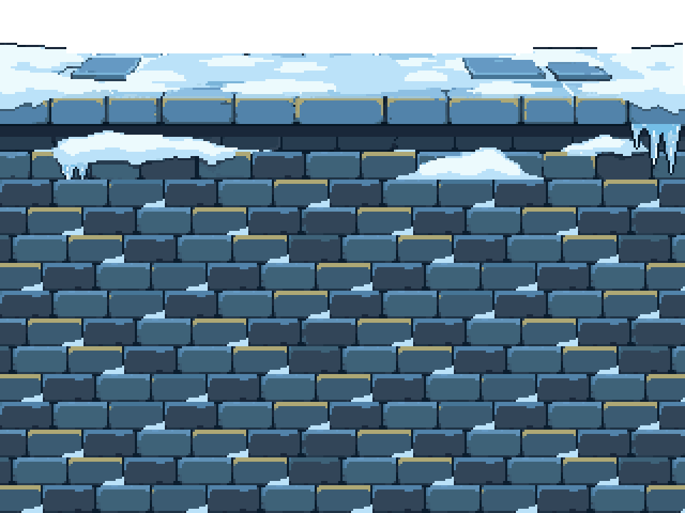

Original PixelLab snow ledge + stacked stone wall
The thin snow-capped lip and icicles are restored. The smaller cobblestones now continue behind the board and bottom HUD to the screen edges.
99.84% exact original ledge pixels0 additional generations6 native modulesNot merged · review candidate
Actual Unity before and after
Rattlebones, three Frostwake enemies, floor line, portrait, board, health bars and controls retain their placement. These are actual Game-scene captures.
Previous Stage 4 separator
Original-style separator and full lower stone wall
Preview only. The board and bottom HUD retain their existing art and controls. Their surrounding background is the requested new stone wall. Legacy enclosure/board art and the existing 360×640 camera warning await later stages. No phone testing is claimed.
Original PixelLab source

Five slices retain its first 84 native rows. Only the empty right export column was closed below the snow edge. No ledge palette remap or resampling.
Native wall continuation
1× native, then 3× nearest-neighbor. The scene repeats individual modules; this assembled image is only a review illustration.


Editable native assets
Verification
Unity compilation and all five Game-scene cases passed. Whole-pixel scale, shared geometry, upper scenery and portrait checks passed. Lower screen edges are fully covered by the stone repeat. All 9,051 protected files retain their starting hashes.
Native PNG/ASE pixel checks are exact. Screenshot color membership alone allows the user-approved one-byte Unity linear/sRGB conversion.
Handoff notes · Native QA · Unity checks · Screenshot comparison · Preservation